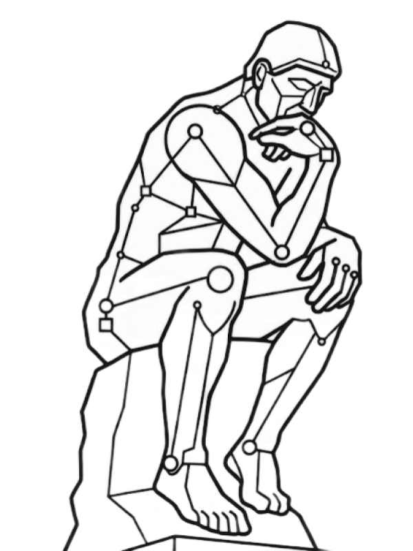

Inițiativa Gânditorul

România poate juca în prima ligă globală a celei mai profunde revoluții tehnologice din istorie: Secolul AI. Inițiativa Gânditorul pornește de la o realitate simplă: nu putem concura cu marile puteri la capital și infrastructură, dar putem deveni relevanți acolo unde contează decisiv, la nivelul modelelor fundamentale de inteligență.
Inițiativa Gânditorul este un program românesc de cercetare fundamentală în inteligență artificială, construit de Asociația IBF împreună cu parteneri academici. Miza este dezvoltarea unei noi generații de modele AI: mai coerente, mai sigure și mai eficiente, capabile de învățare continuă și de înțelegere structurală a lumii, nu doar de predicție statistică.
Suntem într-un punct de inflexiune: modelele actuale sunt spectaculoase, dar rămân fragile și opace: halucinații, costuri uriașe, aliniere dificilă. Următoarea paradigmă va fi definită de world models: sisteme care pot construi reprezentări cauzale, verificabile și stabile ale realității.
În prima etapă, Inițiativa Gânditorul lucrează cu o echipă de cercetare interdisciplinară (logică formală, algebră, teoria categoriilor și instituțiilor, machine learning, procese stocastice) pentru a formaliza fundația și a livra prototipuri demonstrative. Un prim vector strategic este direcția de Real World Models (RWM), sisteme ancorate ontologic, cauzale și structure-aware by design.
Open research. Open architecture. Open future. Construirea inteligenței care va modela civilizația nu poate rămâne un proces opac. Inițiativa Gânditorul mizează pe cercetare auditată, colaborativă și replicabilă.
Susține Inițiativa
Dacă vrei să accelerezi cercetarea și să contribui direct la poziționarea României în următoarea paradigmă globală a inteligenței artificiale, poți susține Inițiativa Gânditorul prin sponsorizare. Pentru companii, sponsorizarea se poate realiza din impozitul pe profit, în limita cadrului legal aplicabil.